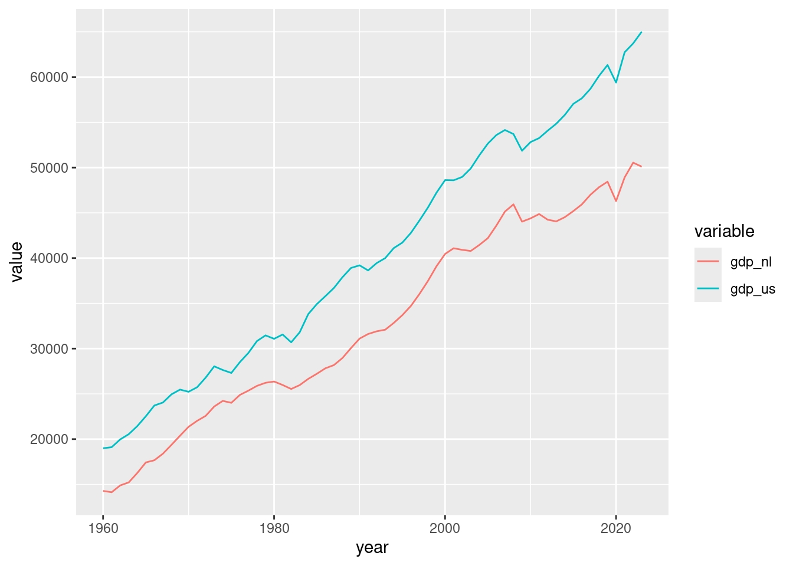
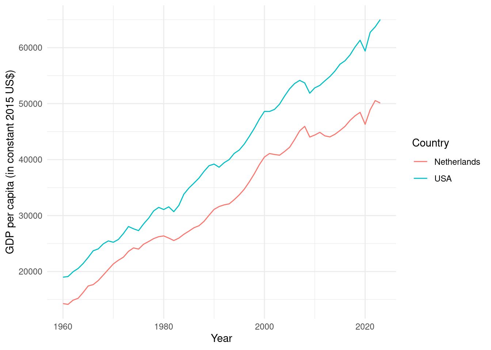
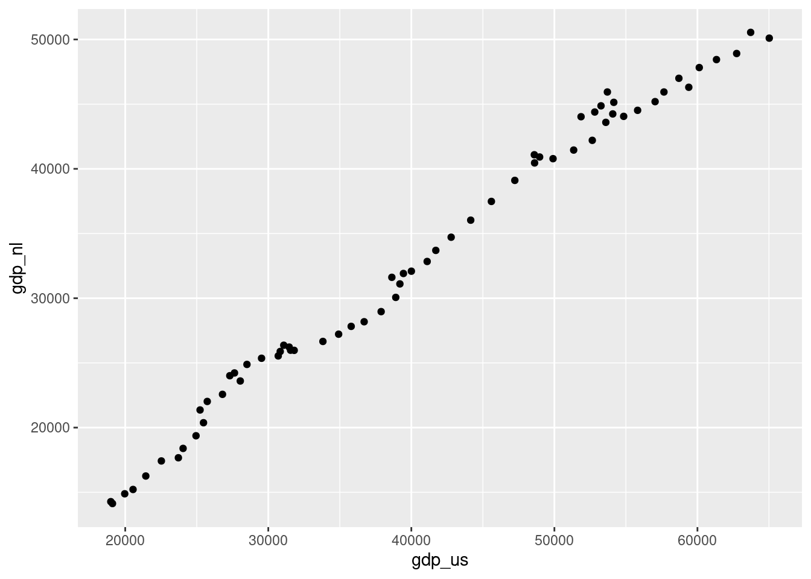
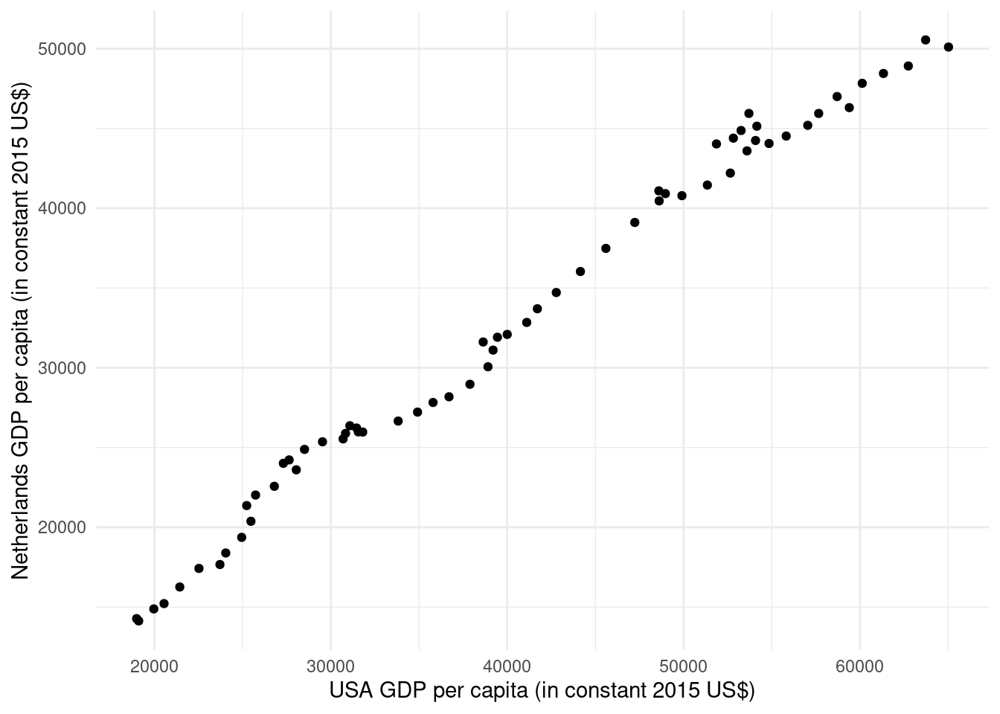
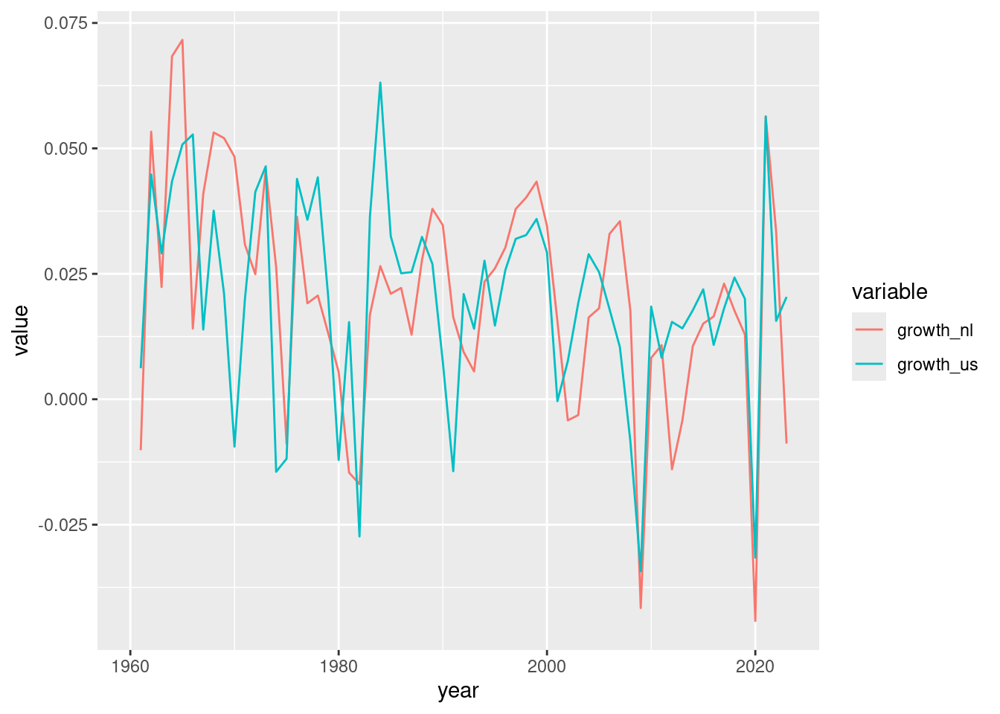
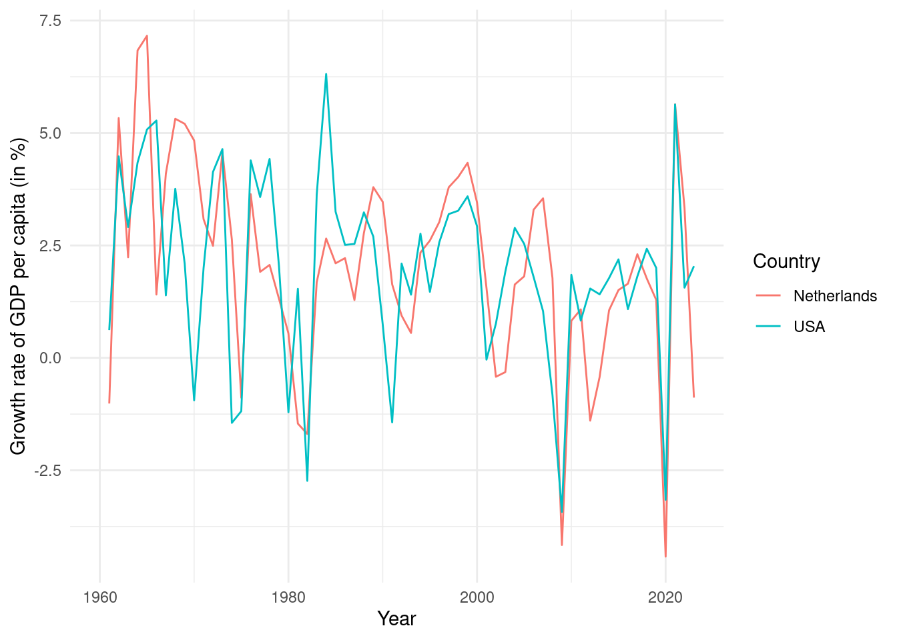
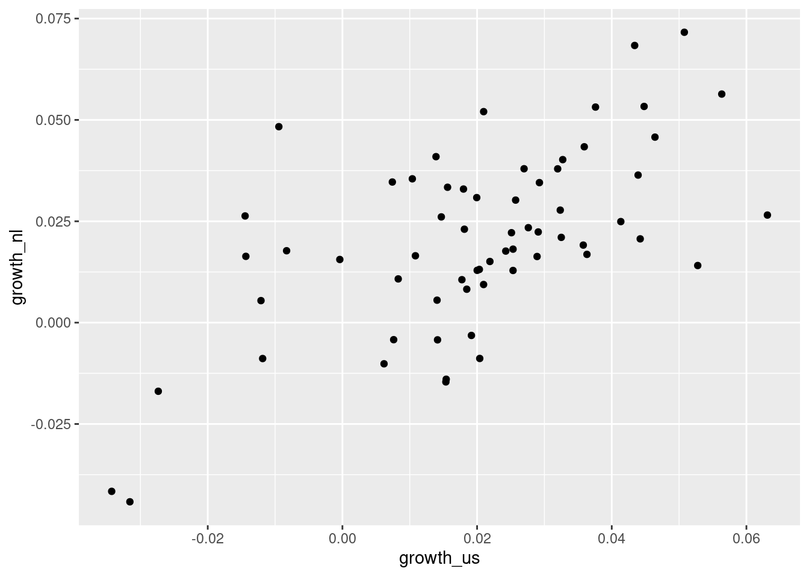
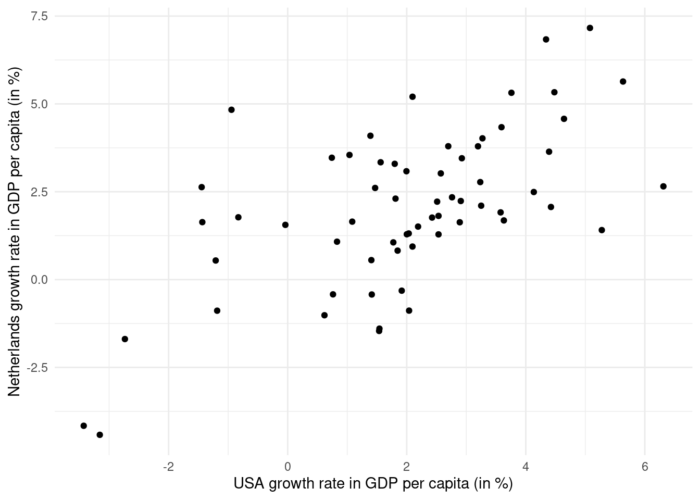

In this instruction exercise we are investigating the following claim:
“The economic growth in the USA will also be good for economies in Europe.”
We will do this by studying the relationship between the US and Dutch economy by comparing the evolution of both countries’ GDP per capita and GDP per capita growth rate over 1960-2023.
The data on both countries’ GDP per capita are contained in the file instruction1.xlsx.
Exercises
Construct a plot of the time series of both countries’ GDP per capita and comment.
Construct a scatter plot of both countries’ GDP per capita and comment.
Construct both plots from Questions 1-2 for the growth rates of both countries’ GDP per capita and comment.
Calculate the covariance and the correlation coefficient between the growth rates of both countries’ GDP per capita. Interpret the results.
Solution
Preliminaries
We first try to read in the data. Because this is an Excel file and not a CSV file we need a package to be able to read in the file. We use the read_excel() function from the package readxl to do this. Let’s try this out and see what the data looks like:
# A tibble: 6 × 3
`GDP per capita (constant 2015 US$)` ...2 ...3
<chr> <chr> <chr>
1 Year Netherlands United States
2 1960 14276.8700623396 18991.5446025928
3 1961 14131.9601777754 19108.9353645939
4 1962 14885.5239013739 19965.1435753955
5 1963 15218.4581936088 20545.7842453942
6 1964 16258.8023709137 21437.5840704395
We can see that the first row of our dataframe contains the variable names instead of data. A closer inspection of the instruction1.xlsx file reveals that the variable names are on the 2nd row and the data do not start until the 3rd row. The first row just says what variable is shown in columns 2 and 3 (GDP per capita in constant 2015 US$). Therefore we have to set the skip = 1 option to skip this row.
Now the data have been read in correctly. Let’s also change the variable names to be lower case, contain no spaces, and be more descriptive about what they are.
names(df) <-c("year", "gdp_nl", "gdp_us")
Finally, you may have noticed that read_excel() read the dataset in as a tibble:
class(df)
[1] "tbl_df" "tbl" "data.frame"
This is very similar to a dataframe and we could keep it this way for the rest of the exercise. However to keep things displaying the way we are used to we can convert this to a standard dataframe. We do this as follows:
df <-data.frame(df)class(df)
[1] "data.frame"
Now the dataset is clean and ready to go to answer the questions.
Question 1
To plot both time series in one plot we need to reshape the data from wide format to long format. We do that using the melt() function from the reshape2 package:
To create the plot then we use the ggplot() function from the ggplot2 package using a geom_line() layer:
ggplot(plot_df, aes(year, value, color = variable)) +geom_line()

What we can see from the plot is that both countries’ GDP per capita are increasing over time with the Netherlands having a somewhat lower level each year compared to the US. You might conclude from this that they move together over time: they follow a very similar trend.
The plot above would be fine if we are just exploring the data, but if we want to produce a more professional-looking plot (for example, for a report or a publication) we need to clean things up a bit. For example, we might want more descriptive axis labels and legend labels. We will show how to do this now.
To fix the legend we can create a factor variable from the variable variable and set the factor’s levels to be the country names with their full spelling (like “Netherlands” and “USA”). We can then change the labels of the axes and the legend title directly within the ggplot() call. Here is the code:
# Create factor variable for the country:plot_df$country <-factor(plot_df$variable)# Check current levels:levels(plot_df$country)
[1] "gdp_nl" "gdp_us"
# Set new levels:levels(plot_df$country) <-c("Netherlands", "USA")# Create the plot:ggplot(plot_df, aes(year, value, color = country)) +geom_line() +scale_color_discrete(name ="Country") +xlab("Year") +ylab("GDP per capita (in constant 2015 US$)") +theme_minimal()

Now we have a more professional-looking plot.
Question 2
To create a scatter plot of both countries’ GDP per capita we can go back to the df dataframe and create it using a geom_point() layer within ggplot():
ggplot(df, aes(gdp_us, gdp_nl)) +geom_point()

We can see that the two variables are highly linearly related: when one variable is high the other variable is high and when one variable is low the other variable is low. There is a very strong positive linear relationship between the two variables.
If we calculate the correlation between the two variables we get:
cor(df$gdp_us, df$gdp_nl)
[1] 0.9941681
This is very close to the highest possible value of 1. Thus the two variables are very highly correlated.
To get a cleaner plot we can set some options as follows:
ggplot(df, aes(gdp_us, gdp_nl)) +geom_point() +xlab("USA GDP per capita (in constant 2015 US$)") +ylab("Netherlands GDP per capita (in constant 2015 US$)") +theme_minimal()

Question 3
The growth rate of a variable x_t is given by \frac{x_t - x_{t-1}}{x_{t-1}}. A value of 0.05 in a year means the economy grew by 5% from the previous year.
To create this variable we first need to create a variable which is the lagged value. This is the x_{t-1} in the equation. The lagged value should appear in our dataframe in the following way:
x_t
x_{t-1}
Value in 1960
Value in 1959
Value in 1961
Value in 1960
Value in 1962
Value in 1961
\vdots
\vdots
Value in 2021
Value in 2020
Value in 2022
Value in 2021
Value in 2023
Value in 2022
Because the value in 1959 is unknown, we need to replace this with an NA. We can create this variable in R by combining one missing value (NA) with the 1st to the 2nd-last value of GDP. The index of the 2nd-last value is nrow(df) - 1 (one minus the number of rows in df). The code to create the lags is then:
We can see that the lagged value in 1961 is the same as the value in 1960 and similarly for the other years: it’s always equal to the value in the previous period. The only exception is 1960 which is NA because we don’t know what the value of GDP was in 1959.
We are now ready to create the growth rates using the formula \frac{x_t - x_{t-1}}{x_{t-1}}:
We can plot the two growth rates over time in a similar way to Question 1. We just have to use melt() on a dataframe containing only the years and the growth rates:
Warning: Removed 2 rows containing missing values or values outside the scale range
(`geom_line()`).

We get a warning about 2 missing values because we are missing the values of GDP in 1959 for both countries.
Here we see that growth rates of the two countries follow a similar pattern, but not as similar as what we saw in Question 1. When one growth rate is high, the other is often high (such as in 2021) and when one growth rate is low, the other is often low (such as in 2009). But in other time periods this is not the case.
We can also produce a cleaner plot using similar steps to before. I multiply the value variable by 100 to convert the growth rate to a percentage.
# Create factor variable for the country:plot_df$country <-factor(plot_df$variable)# Check current levels:levels(plot_df$country)
[1] "growth_nl" "growth_us"
# Set new levels:levels(plot_df$country) <-c("Netherlands", "USA")# Create the plot:ggplot(plot_df, aes(year, 100* value, color = country)) +geom_line() +scale_color_discrete(name ="Country") +xlab("Year") +ylab("Growth rate of GDP per capita (in %)") +theme_minimal()
Warning: Removed 2 rows containing missing values or values outside the scale range
(`geom_line()`).

We can also create a scatter plot for the growth rates like in Question 2:
Warning: Removed 1 row containing missing values or values outside the scale range
(`geom_point()`).

Here we see a positive linear relationship but much less strong compared to before.
And we can produce a cleaner version using:
ggplot(df, aes(100* growth_us, 100* growth_nl)) +geom_point() +xlab("USA growth rate in GDP per capita (in %)") +ylab("Netherlands growth rate in GDP per capita (in %)") +theme_minimal()
Warning: Removed 1 row containing missing values or values outside the scale range
(`geom_point()`).

Question 4
If we try to get the covariance using:
cov(df$growth_us, df$growth_nl)
[1] NA
We get NA because we have a missing observation. To get around this we need to use the use = "complete.obs" option:
cov(df$growth_us, df$growth_nl, use ="complete.obs")
[1] 0.0002870615
The covariance is positive, indicating a positive linear relationship between the two variables like we saw in the scatter plot. However, the magnitude is difficult to interpret. We cannot tell easily if this covariance is large or small. It also depends on the units of the observations. For example, suppose we got the covariance with the two variables expressed in percent (multiplied by 100):
cov(100* df$growth_us, 100* df$growth_nl, use ="complete.obs")
[1] 2.870615
We get a much bigger number (the same number as before multiplied by 100\times 100). But the data contains the same information as before so we can’t really say the covariance is stronger in the second case.
This is one reason why we prefer to use the correlation coefficient to measure the degree of association between two variables. It does not depend on the units and is always between -1 and +1 so we can easily tell how strong the relationship is.
We now calculate the correlation:
cor(df$growth_us, df$growth_nl, use ="complete.obs")
[1] 0.6157628
We get a correlation of 0.6158 which shows a positive strong linear relationship, but not nearly as strong as the 0.994 correlation we saw earlier with the levels of GDP per capita.
Why was the relationship between GDP per capita so strong between the countries, yet the relationship between the growth rates less so? The reason is because both countries’ GDPs are increasing over time for other reasons (for example, technological progress). Therefore because of the presence of other variables affecting the GDP of both countries, the 0.994 correlation is spurious. When we take growth rates instead of levels, we remove the influence of the time trend on the relationship, and can get a better sense of how the two variables are related.